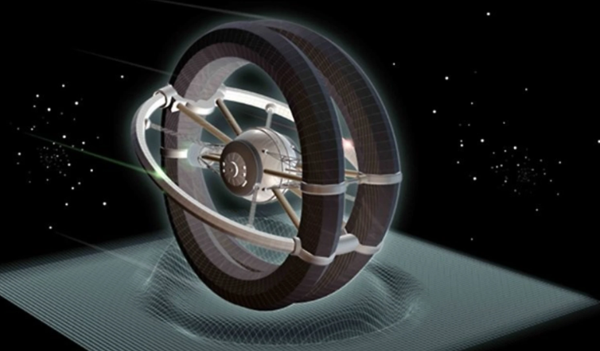

The Alcubierre Drive
Proposed by Mexican theoretical physicist Miguel Alcubierre, this drive would allow a spacecraft would traverse distances by contracting space in front of it and expanding space behind it, resulting in effective faster-than-light travel. Objects cannot accelerate to the speed of light within normal spacetime; instead, the Alcubierre drive shifts space around an object so that the object would arrive at its destination faster than light would in normal space without breaking any physical laws.
Although the metric proposed by Alcubierre is consistent with the Einstein field equations, construction of such a drive is not necessarily possible. The proposed mechanism of the Alcubierre drive implies a negative energy density and therefore requires exotic matter. So if exotic matter with the correct properties cannot exist, then the drive could not be constructed. At the close of his original article, however, Alcubierre argued (following an argument developed by physicists analyzing traversable wormholes) that the Casimir vacuum between parallel plates could fulfill the negative-energy requirement for the Alcubierre drive.
About This Website
The purpose of this website is to introduce readers to different types of space drive technology that is currently theorized. These theories push the known laws of physics, but they may lead to scientific breakthroughs. Organizations such as
NASA's Eagleworks are testing these and other theories now.